Windows x64 release 1.3.1 · October 9, 2026
Optical Design Studio
User Guide
Apply an optical structure, run a calculation, inspect the measured results and save your work. This illustrated guide follows the current native desktop Help topics and shipped tutorial assets.
The Silicon example is a real saved production S4 calculation with explicit constant-index approximations. Geometry screenshots show applied inputs; spectrum and field images show the recorded calculation. Changing inputs requires new results.
No matching topics. Try another term or choose Show all topics.
Launch, storage and upgrades
Windows portable release
Extract the complete OpticalDesignStudio-Portable-1.3.1-Windows-x64.zip to a writable folder, then run Optical Design Studio.exe. Keep OpticalDesignBackend.exe and _internal beside it. The complete portable package includes Python and the calculation runtime; a separate Python installation is not required.
This release is unsigned. SHA-256 checksums identify archive contents and check download integrity; they are not a publisher signature. Keep the supplied notices and source when redistributing included components.
Run from source
The separate corresponding-source archive requires a compatible 64-bit Python 3.12 environment, its pinned dependencies, and an S4 native extension built for the same platform and Python ABI. From the archive root, run python .\src\qt_app.py; from its src directory use launch_qt_gui.cmd. Set S4_PYTHON to the intended interpreter when using a launcher. See README.md and DESKTOP_GUIDE.md for dependencies and source setup. Source is not a substitute for the complete portable runtime.
Preserve your work
Save projects, finish calculations and close the old application before updating. Back up saved project JSON files and the active data directory shown in Settings → Data storage. A default portable installation uses User Data beside the executables. When using a new program folder, preserve that folder; extraction does not move an existing library. Preserve a custom data directory and its portable_settings.json selection, then confirm the active location after launch. Help → Quick actions → Open library folder opens the current library.
Meep, GPU, CAD and machine-learning features have their own documented runtime requirements. The desktop can use CPU S4 without installing the optional Meep engine. Use Help → About to confirm the running version; Help → Updates checks the configured release source.
First simulation: Silicon on SiO₂
This walkthrough uses the bundled Silicon example, which also has genuine saved S4 results. Geometry: Air above, a 220 nm Silicon film, semi-infinite SiO₂ below, one centered circular Air hole with 100 nm radius, and a 540 nm square period. The radius corresponds to a 200 nm diameter. Silicon n = 3.48, SiO₂ n = 1.45 and Air n = 1; k = 0. These are explicit constant-index tutorial approximations.
- In Help → Quick actions, choose Open example project, or open the portable example JSON. Save a personal project copy before editing.
- In Structure, choose Silicon in the named Layer dropdown. Confirm the film thickness, lattice and Air region. Layer selection follows the stack and 3D selection. Apply layer, lattice or pattern after edits.
- In Materials, inspect Silicon and SiO₂. Confirm that the constant optical models are intentional approximations. Display color and preview opacity change geometry appearance only.
- In Settings → Performance, use CPU computation and set the requested Fourier basis to 81 to reproduce the recorded run.
- In Simulation → S4 · RCWA, use wavelength mode: start 1515 nm, stop 1555 nm, step 1 nm, p polarization, θ = 0° and φ = 0°. Check the selected field-sampling controls before running; the recorded example used 25 samples per axis and three volume depths in the finite Silicon layer.
- Use the fixed bottom Run control. Inspect the 41 calculated spectrum samples and saved fields. Changing the geometry requires a new calculation; old results keep their original input snapshot.
- For the illustrated field maps, use the saved 1550 nm sample. XY is z = 0.11 µm inside Silicon; XZ is y = 0 through the film. Inspect normalization and physical coordinate labels.
- Export complete CSV files or open the saved run directory. Increase basis and refine wavelength/grid/depth sampling before treating an optical feature as converged.
The saved lossless spectrum has R + T near one and negligible absorption within numerical precision. This smooth tutorial spectrum does not establish a resonance, experimental material accuracy or spatial-field convergence. The recorded basis comparison is evidence for this example and these settings.
To inspect the completed calculation without running it again, open the actual-result topic below. Its CSV files, inputs, all 41 field datasets, basis comparisons and provenance are shipped beside the images.
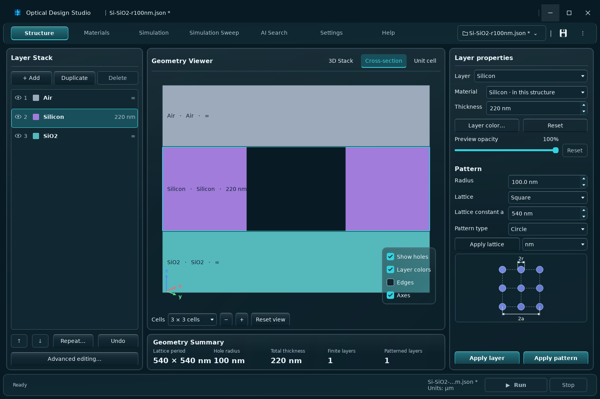
Getting started
- Create a project with Menu → New project, or open a portable project JSON. Save a copy before changing an existing device.
- In Structure, set lattice dimensions, choose the dimension unit, add finite layers between the incident and exit media, and Apply layer. Add holes or filled regions and Apply region.
- In Materials, inspect each optical dataset and confirm its wavelength coverage. Assign the intended material to every layer and region.
- In Simulation → S4 · RCWA, choose wavelength or angle mode, range, step, polarization and angles. In Settings → Performance choose basis and computing resources. Start with a small calculation.
- Use the fixed bottom Run control; inspect R/T/A and the sample cursor. Export the complete CSV or reopen the saved run.
- Refine basis, wavelength spacing and field sampling to check convergence before interpreting narrow peaks or accepting a search candidate.
Structure is shared by new simulations and searches. Saved results retain the snapshot that produced them. Fields and Saved results are inside Simulation.
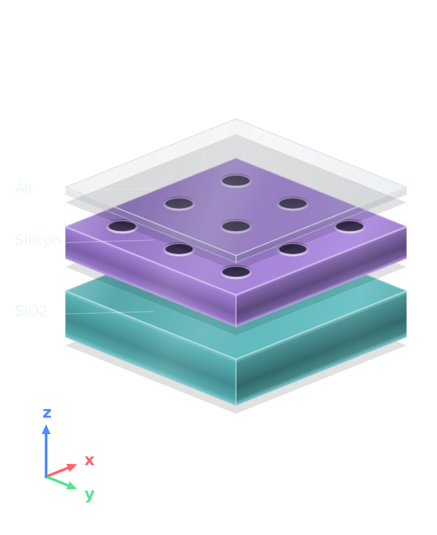
Structure and layers
Select a stack layer or choose its name from the Layer dropdown. Edit name, material and finite thickness, then Apply layer before switching layers or running a calculation. Add above / below inserts using the current form; Duplicate copies regions; Move up / down changes finite-layer order; Delete removes its regions too.
The first and last layers are semi-infinite incident and exit media. Their stored thickness is zero; the preview displays only finite padding. Repeat a layer block copies the inclusive finite-layer range: two additional copies of A–B produce A–B–A–B–A–B. Undo restores earlier structure edits (up to 30 retained steps); loading another project clears that history and added material presets remain.
Applied geometry is checked during edits and calculation inputs are checked before a run; these checks do not establish optical convergence or material validity. Layer color and Reset color affect display only. Colors are stored in portable projects and follow renamed or duplicated layers. Eye / visibility controls, Show holes, Layer colors, Edges and Axes never remove physical geometry from the solver.
Materials
Search project materials or saved presets. Inspect n / k, source and covered wavelengths. Apply material to layer assigns the selected entry; a preset is added to the project when needed. Removing a project material does not remove its saved preset, and a material used by geometry cannot be removed.
Constant n,k is an explicit approximation. A tabulated dataset has wavelength dependence; solver requests must stay inside its covered band. With the passive sign convention, k describes attenuation and ε=(n+ik)². Do not replace a dispersive dataset with a constant merely to bypass a coverage error.
Record the dataset page, publication, sample conditions and wavelength units. Save a named preset for future projects; prior saved versions are retained. Export optical constants CSV uses the selected real dataset.
Project / Library / All scopes filter the searchable material cards. Choose n & k, n only or k only above the graph. Dots show original table samples; the curve evaluates the selected interpolation between them. The data table and complete CSV retain original samples.
Linear interpolates n and k linearly. Linear (in log k) keeps n linear and interpolates log(k); every k sample must be strictly positive. This policy affects S4 optical constants and MEEP dispersion fitting and is saved with the project and library preset. Constant models have no wavelength interpolation.
Display color and Preview opacity affect the material's geometry preview only; explicit layer colors take priority. Notes preserve exact multiline project text and can be saved with a preset. Source attribution stays separate. Changes autosave; an unsuccessful save retains the notes draft for retry. Apply material to layer assigns real data without changing layer dimensions.
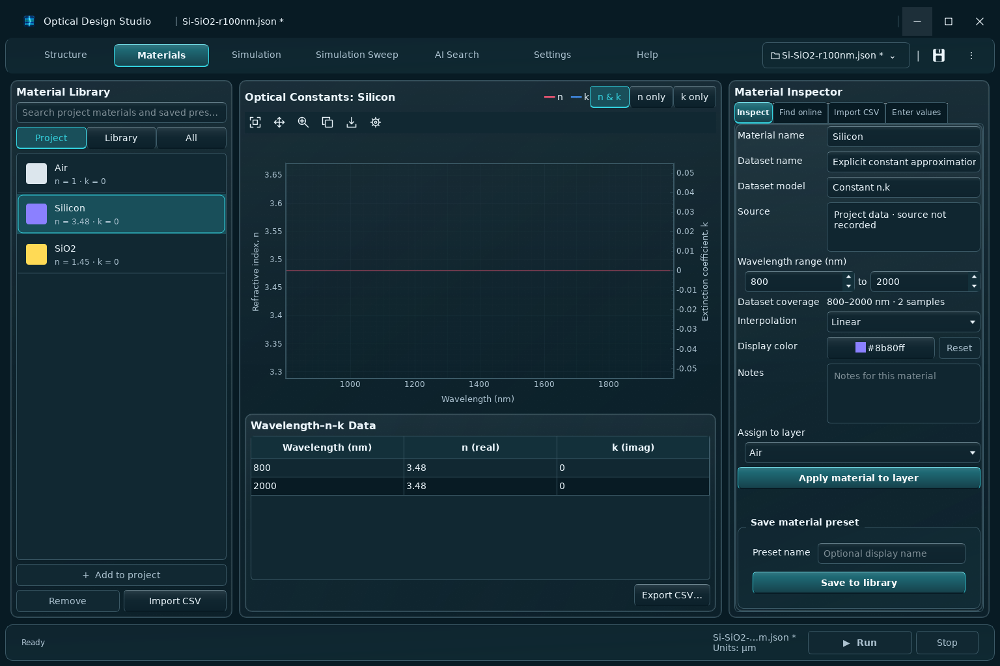
Simulation and sample readout
S4 · RCWA solves the applied periodic layered structure. Set wavelength or angle mode, start, stop, step, polarization, θ and φ with their labeled units. Wavelength mode scans λ; angle mode changes the selected incidence variable. Basis and CPU/GPU resources are shared through Settings.
R/T/A plots use percentages of incident power with 0–100% axes. Raw CSV values remain power fractions: 0.2 means 20%, not 0.2 watts. Inspect their sum and numerical stability. Click the spectrum or select a sample number to read the nearest calculated point; the cursor does not create a new solve or an interpolated resonance.
Spectrum, Samples, Phase and Electric fields are result views. The on-screen sample table can show only the first 10,000 rows; Export spectrum CSV retains all calculated samples. Recent runs load completed measurements; Load setup explicitly restores their design.
Use the fixed Run control at the bottom to start this active workspace. Stop requests cancellation and waits for workers to stop; monitor the progress/status area and inspect saved status before interpreting partial work.
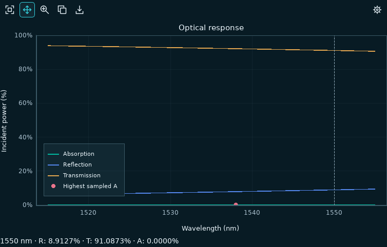
Electric fields
Simulation → Fields → Current Structure calculates fields at the selected wavelength. Choose layer for the XY top view, grid samples per axis and depth samples per layer. XZ spans the stack. Inspect Ex/Ey/Ez, total field quantity, logarithmic display or arrows with the controls available in the view.
S4 electric-field amplitudes use the incident-amplitude convention; intensity is not automatically a power or energy density. MEEP optional field maps use raw DFT amplitudes and must not be treated as the same normalization. Finer grids/depths increase calculation time and storage; interpolation adds no solved detail.
Save image exports the current visualization. Export data retains complex field samples; Copy plot places the displayed image on the clipboard. Open saved files exposes the full result directory. Check the selected component and normalization before comparing brightness between runs.
Use the fixed Run control at the bottom to start this active workspace. Stop requests cancellation and waits for workers to stop; monitor the progress/status area and inspect saved status before interpreting partial work.
Map axes retain the saved physical coordinates in µm. XY uses equal X/Y scale. The full-stack XZ pane can stretch its vertical display to fit deep stacks; judge lengths from its coordinate ticks. The 3D field viewer preserves physical proportions.
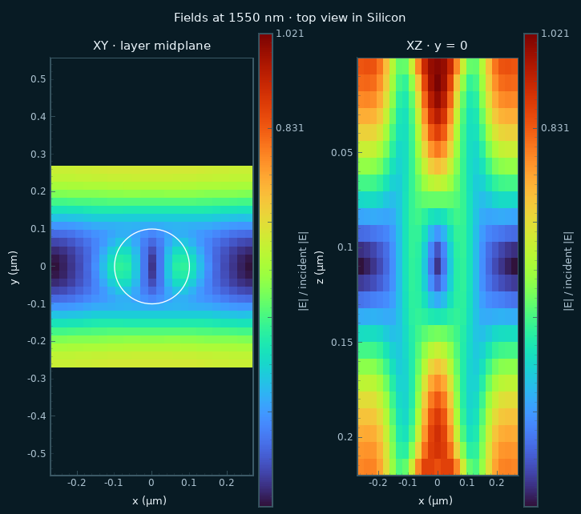
More detail: FIELD_TRACKING_GUIDE.md
Recent runs and saved results
Load selected run inspects its stored measurements without replacing current geometry. Load setup / Reopen in editor restores the saved original setup or explicitly selected design. Review that choice before starting a new calculation.
Saved results filters by title, type and status. Refresh after jobs or imports, select a run, inspect results/notes, export CSV or a complete run ZIP. Portable project JSON embeds materials and applied geometry. A run archive also retains the calculation conditions and result files.
Back up / share exports the selected library, with optional application files; import merges supported library data. Keep a backup before transfer. Changing Data storage selects a library location rather than silently moving every old result. Never delete the only copy of a campaign checkpoint or measured field dataset.
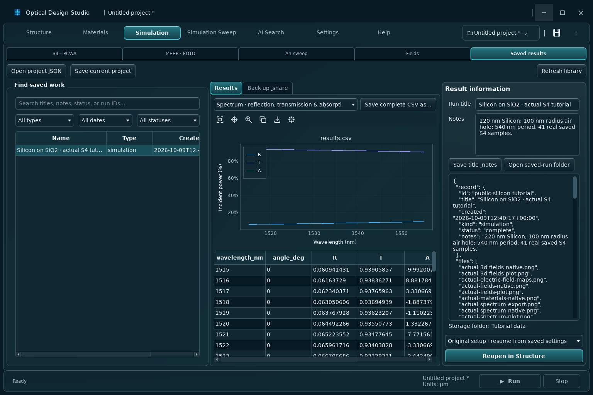
More detail: DATA_LIBRARY_GUIDE.md
AI Search
Set up owns wavelength, polarization, angles, basis, field objective and parameter ranges. Structure geometry and Settings computing resources are shared, but Simulation edits do not change AI illumination. Copy ranges is an explicit copy.
The field-confinement objective supports an aligned circular air hole in each selected perforated layer above an unperforated substrate. Review strengths and coverage targets, XY/full-stack XZ fields, depth line, contours and RTA. Contour extraction is postprocessing, not a new optical simulation at each contour level.
Training uses adaptive sampling or a full range scan. Preview counts; optional NEW simulation limit 0 means no limit. Independent test designs are excluded from fitting and recommendations. Prediction vs S4 and Validation errors use those held-out results; prediction alone is not verification.
Search proposes untested designs, measures them, refits and verifies finalists at larger basis/grid. A recommended design is written only when the verified constraints and numerical agreement pass. Use selected design can still apply an explicitly chosen screening candidate with its status visible.
Use the fixed Run control at the bottom to start this active workspace. Stop requests cancellation and waits for workers to stop; monitor the progress/status area and inspect saved status before interpreting partial work.
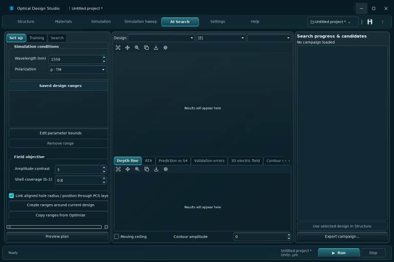
More detail: AI_SEARCH_TRAINING_GUIDE.md
Appearance and colors
B Light, B Dark, Glass Light and Glass Dark share layout and functions. Choose a theme card in Settings → Appearance, or use Menu → Appearance. Edit accent, background, panels, inputs, text, secondary text and borders with a color swatch or six-digit hex. Each look keeps its own local palette; Reset colors restores its defaults. The right-hand preview uses your actual applied structure.
The rounded outer boundary, including the title bar and Windows controls, is the application window. Glass looks use Windows Desktop Acrylic to frost the actual desktop and other application windows behind it, while text and controls remain sharp. Glass surface opacity adjusts panel transparency and the background tint. The application does not paint wallpaper outside its window or blur scientific data. Desktop Acrylic requires Windows 11 build 22621 or later; Windows transparency, accessibility, power and remote-session preferences can substitute a solid material. Unsupported platforms and offscreen previews use a solid fallback.
In Structure, select a layer and choose Layer color to customize that layer. Preview opacity controls the selected layer's material in every layer using it: 100% is opaque and 0% is invisible. Reset removes the material override. Layer colors and material preview opacity are saved in portable projects and do not change refractive index, extinction coefficient or any solver input.
UI scale adjusts display size; maximize the window or reduce scale when controls need more room. Interface preferences are local desktop settings. Choose sufficient text/background contrast after changing colors.
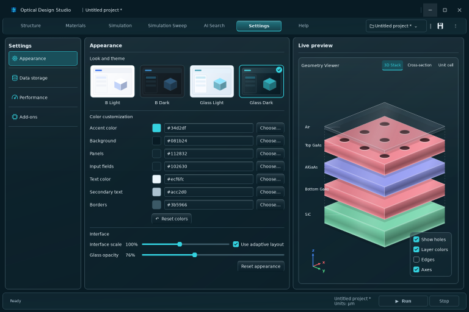
Troubleshooting
- Changes not reflected: Apply layer/region edits, confirm the shared structure, and start a new run. Loading a saved result shows its historical snapshot.
- Material coverage: inspect n/k wavelengths, import unit and intended dataset. Restrict the request to covered data or obtain an appropriate dataset.
- No phase/fields: enable the relevant measurement before running; power CSV alone cannot reconstruct phase or complex fields.
- No tracked peak: inspect overlaid spectra, range and search radius. Endpoints and unresolved baseline features produce missing values.
- GPU unavailable: Check selected runtime, review dependency/device messages, then choose CPU to verify the model. GPU mode names do not prove offloading occurred.
- Meep unavailable: check Add-ons, published-pack availability, WSL2 and the selected Linux runtime. Source integration does not imply an installed engine.
- Search cannot qualify: inspect fabrication limits, sampled resolution, held-out errors and higher-accuracy verification. No passing design is a valid outcome.
- Resume incompatible: restore the campaign settings or start a new campaign. Do not merge mismatched materials/illumination/accuracy.
- Slow or large results: test a smaller design budget/grid, inspect basis and storage, then restore required accuracy for final work.
- Old appearance: restart the intended updated application; an older EXE or a different source launcher can open another version or library.
Shapes, lattice and units
Add region creates a material inclusion; choose Air for an air hole. Apply region commits the selected region. Duplicate then move its center to avoid coincident copies. Circle sizes are radii; ellipse X/Y sizes are radii; rectangle X/Y sizes are full widths. Positions and sizes use the selected form unit; rotation uses degrees.
100 nm = 0.1 µm. Switching Dimension unit converts display values without changing size. Lattice and advanced table columns use their separately labeled µm units; wavelength is nm. Advanced editing exposes layer/region tables, positions and repetition. Apply table edits before calculation.
Geometry summary reports the applied finite-layer thickness/count, lattice, patterned-layer count and a single circular-hole radius when applicable. Multiple circles show Multiple; noncircular shapes have no circle radius.
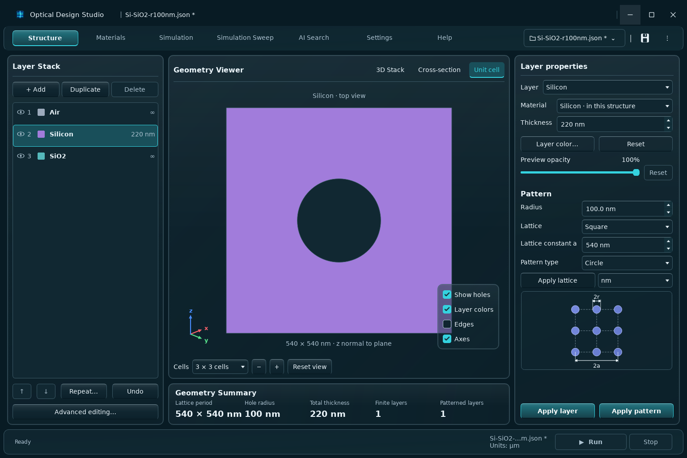
Geometry views
3D Stack shows layer ordering and periodic regions. Drag to rotate, scroll or use Zoom + / −, and Reset view to restore the camera. Cross-section is a cut through the stack; Unit cell shows plan geometry. Their view controls change only the preview.
The Structure preview can repeat one, three or five cells and change the side-view Y cut. Exterior padding is illustrative. A geometry view contains no computed field intensity. Applied changes are shared with new solver jobs; an uncommitted form is not the applied structure.
Common units
| From | To | Multiply by |
|---|---|---|
| µm | nm | 1,000 |
| nm | µm | 0.001 |
| mm | µm | 1,000 |
| µm | mm | 0.001 |
Use the unit printed beside each control. Geometry form units can change; advanced geometry tables and search ranges use µm, wavelengths use nm, and rotation/incident angles use degrees. CSV wavelength units are selected explicitly, never inferred.
Raw R/T/A are dimensionless fractions; spectrum plots show 0–100% of incident power. Δn is in RIU and resonance sensitivity in nm/RIU. Carrier densities use cm⁻³, mobilities cm²/(V s), depth profiles µm and absorption coefficient cm⁻¹. FDTD frequency is inverse µm and time µm/c.
Geometry export
Open the Structure geometry export controls to create supported STEP or COMSOL geometry. Choose cell repeats, file units and whether to include exterior media. Exterior padding gives semi-infinite media finite exported thickness; choose that thickness explicitly. Air/void inclusion depends on the selected export format.
Exporting geometry does not run a solver or establish convergence. CAD add-ons may need installation in Settings → Add-ons. COMSOL geometry and carrier workflows are documented in CAD_COMSOL_EXPORT_GUIDE.md and the carrier guide supplied with the program.
More detail: CAD_COMSOL_EXPORT_GUIDE.md
Import CSV and manual materials
In Import CSV, set wavelength unit before choosing files; units are never guessed. Supported layouts include wavelength,n,k and separate wl,n / wl,k sections. An n-only file requires explicitly choosing k = 0. Review name, source and coverage after import.
Enter values accepts manual wavelength samples. For a constant pair select Constant n,k (explicit approximation), enter n and k, then save. Import and manual entry create project datasets and reusable presets. Keep measured or published attribution separate from your approximation notes.
Find online retrieves external optical data. Review the selected dataset, reference, temperature/sample conditions and available band before importing; a material name alone does not identify a dataset. Network failure is not a valid zero-loss result.
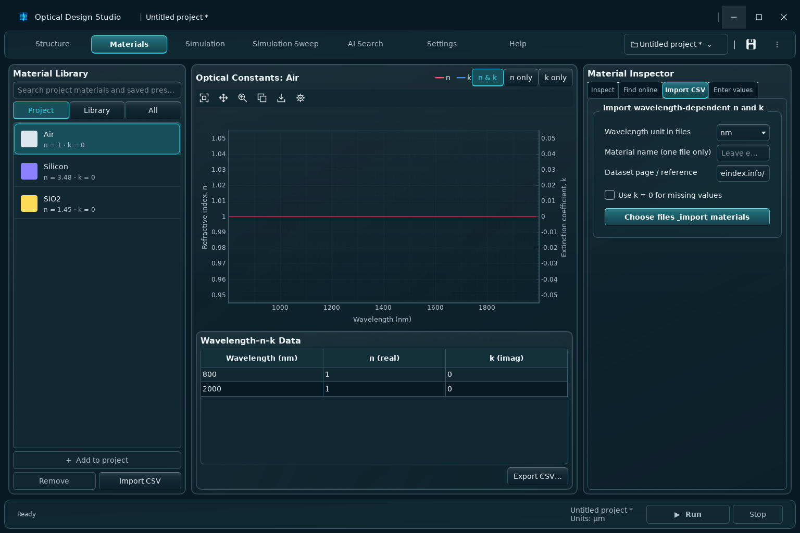
Spectral phase
Enable Measure phase before an S4 run to save specular reflection/transmission phase. Power spectra alone cannot reconstruct phase. The Phase view displays saved complex-amplitude phase data; angle wrapping and phase-change behavior depend on that measurement.
Near vanishing reflected or transmitted amplitude, phase is poorly defined and needs careful interpretation. Use the recorded wavelengths and matched illumination when comparing phase. See SPECTRAL_PHASE_GUIDE.md for the supported phase conventions and saved columns.
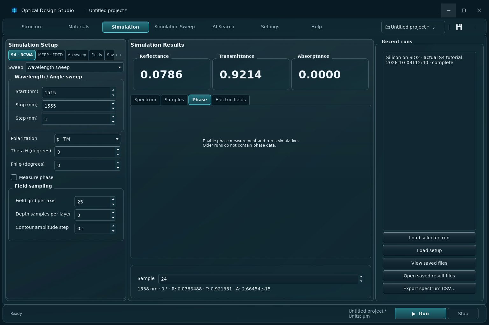
More detail: SPECTRAL_PHASE_GUIDE.md
MEEP FDTD
On Windows, Meep uses a separate managed WSL2 runtime. Settings → Add-ons → Install FDTD engine checks for a matching published pack; opening Settings does not install anything. Set up Windows support can require an administrator prompt and restart. Expert setup validates an existing Linux interpreter.
2D solves an XZ cut extruded along Y: a hole array becomes a grating. Use 3D for the complete periodic unit cell. The supported source is a normal-incidence Gaussian broadband plane pulse with s (Ey) or p (Ex) polarization. X/Y are periodic; depth uses PML. Arbitrary sources, oblique incidence, GPU Meep and MPI are not exposed.
Length uses µm and time µm/c. Frequencies are evenly spaced in inverse µm, so wavelength samples are not uniform. A homogeneous reference simulation precedes the device; reflection subtracts incident Fourier fields and powers normalize to reference transmission.
Check resolution, PML, padding and maximum time. A maximum-time termination produces a convergence warning. Passive tabulated materials require validated dispersion fitting; complex constant index is rejected as a broadband model. Incident/exit media must be constant and lossless. Optional XZ DFT field amplitudes are raw, not incident-normalized. Saved job, fit, summary and worker logs are available with the run.
Use the fixed Run control at the bottom to start this active workspace. Stop requests cancellation and waits for workers to stop; monitor the progress/status area and inspect saved status before interpreting partial work.
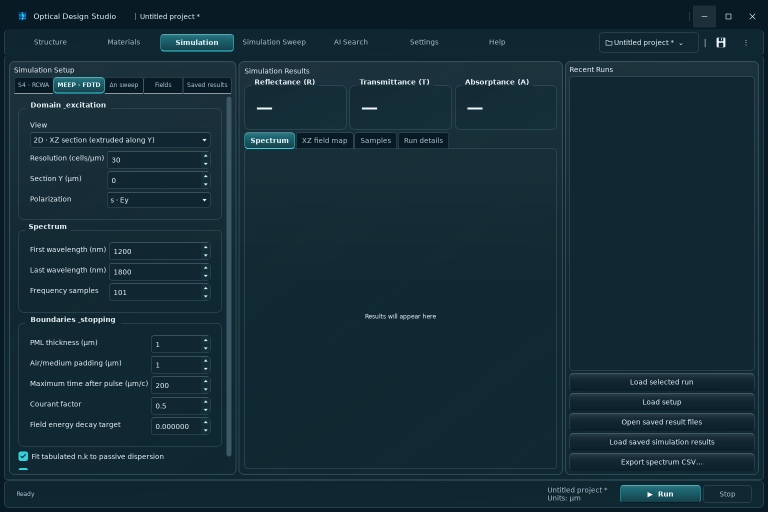
More detail: MEEP_FDTD.md
Δn sweep and carrier density
Choose a project material and check layers to perturb; background and regions using that material in those layers change, while other occurrences and the library stay unchanged. Manual Δn adds a real refractive-index shift and keeps k fixed. Constant ε is first converted to its principal complex refractive index; Δn is not additive ε.
Equal shift uses one shared axis. Independent layer bounds enumerate combinations; equal start/stop with one sample gives a fixed offset. A zero-shift baseline is included at most once. The wavelength range and illumination come from S4 · RCWA; wavelength mode needs at least three samples. There is a limit of 200 requested combinations plus baseline and 200,000 wavelength samples.
Carrier density mode configures reference and biased electron/hole concentrations in cm⁻³ using the carrier dialog. Its material model can change both index and absorption; it is not equivalent to the manual real Δn approximation. Review material parameters and model applicability in the carrier guide.
Choose R/T/A, peak/dip, reference λ and search radius. Tracking locates a sampled local feature near the baseline; endpoints are excluded. Missing features remain blank. Shared sweeps report Δλ/Δn in nm/RIU; independent sweeps do not claim one multi-parameter sensitivity.
Use the fixed Run control at the bottom to start this active workspace. Stop requests cancellation and waits for workers to stop; monitor the progress/status area and inspect saved status before interpreting partial work.
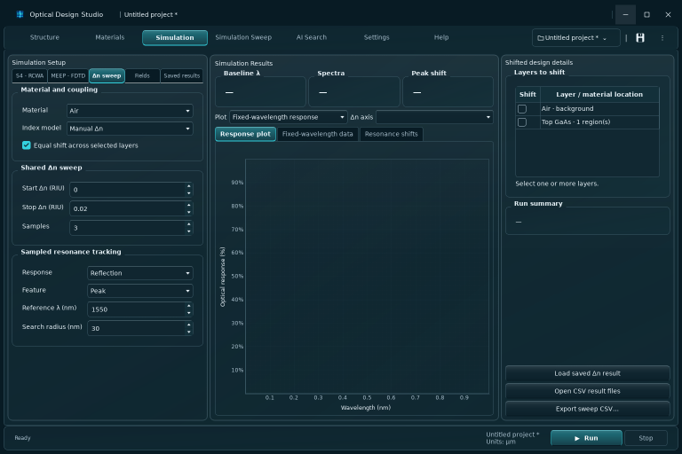
More detail: CARRIER_INDEX_GUIDE.md
Fixed-wavelength Δn readout
The baseline peak/dip selects one locked λ₀. Fixed-wavelength response measures every shifted spectrum at that same baseline sample, even when its resonance moves. Change from baseline is the signed difference; Overlaid spectra shows full curves and λ₀.
Underlying R/T/A are power fractions, not watts. Response plots show percent and baseline-change plots show signed percentage points; a 0.01 fraction change is 1 percentage point. An unresolved baseline feature leaves the readout unavailable. In independent sweeps, select a Δn axis; each curve holds other offsets fixed as recorded in its legend. The UI displays at most 24 curves, but CSV includes every case.
index_shift_spectra.csv retains R/T/A, index_shift_features.csv records sampled feature positions, and index_shift_readout.csv records λ₀, baseline and changes. Tracking does not establish mode identity or sub-sample peak location; inspect crossing/splitting curves and refine wavelength/basis.
More detail: INDEX_SHIFT_GUIDE.md
Carrier models and depth profiles
The carrier dialog uses absolute reference and biased electron/hole concentrations. Reference-data mode assumes library n/k already include the reference carrier state; Undoped mode adds absolute corrections for both states. Bias voltage is supplied metadata, not a prediction of carrier concentration.
The implemented free-carrier Drude approximation uses explicit conductivity masses and fixed mobilities. Increased carriers lower n and increase loss in this model; depletion reverses the change. Negative resulting k is rejected. GaAs/custom materials are not automatically validated by a silicon model; review source assumptions, editable masses/mobilities and the 1000–2000 nm guard. Concentrations above 10²⁰ cm⁻³ are rejected.
Depth CSV uses layer,z_um,reference_electron_cm3,reference_hole_cm3,electron_cm3,hole_cm3 and covers both endpoints of every selected finite layer. All states use the same depth/reference grid. Duplicate nodes marked side=left then side=right preserve discontinuities. Slice density is evaluated at midpoints; region geometry and total thickness are preserved. Refine slice sampling.
The reported depth-averaged Δn is thickness weighted, not field weighted or modal effective index; spectra use the full sliced model. COMSOL four-file import has explicit layer mapping, units and audited optional negative-noise cleanup. The abrupt-junction estimator assumes a homojunction/depletion model and does not solve transport or automatically generate a profile.
More detail: CARRIER_INDEX_GUIDE.md
Field comparison and 3D playback
Compare saved designs selects reference, comparison and a common layer. Physical coordinates retain distances; layer-relative coordinates help compare changing geometries. Shared scales and overlap/confinement/centroid measures describe steady-state field differences, not time propagation.
3D field playback displays sampled volume points or interpolated surfaces with threshold, layer and component controls. Phase animates steady-state harmonic field arrows; it does not simulate pulse travel. Intensity surfaces are phase independent, and energy-flow displays are time averaged. Surface interpolation cannot add spatial resolution.
Export comparison keeps maps, measures and source fields. Use matched wavelength, illumination, normalization and sampling for interpretable comparisons.
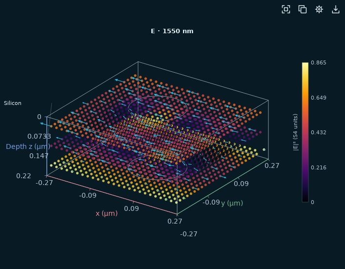
Simulation Sweep
Target wavelength searches within the target tolerance, minimum Q, hole bounds and other parameter ranges. Target qualification requires absorption strictly above 99%, a resolved peak within tolerance, fabrication bounds and higher-resolution agreement. Peak-center tolerance does not guarantee that absorption at the exact target is above 99%.
Circle r/a must be below 0.6 and periodic holes must leave a positive bridge. Linked radii create one common variable for checked existing circular air holes; their centers are not moved and missing holes are not created. Geometry ranges use labeled µm units; wavelength is nm.
Explore designs offers exhaustive, ML-assisted and hybrid search over parameter bounds. Set detection/sampling, trial budget, constraints and verification accuracy. Save/load preserves configuration; renaming a manually bounded layer requires reviewing its old target name.
Predicted or screening leaders remain candidates until higher-accuracy verification. Use selected design applies that geometry to Structure; inspect its verification status. Highest verified Q found does not establish a continuous global optimum.
Use the fixed Run control at the bottom to start this active workspace. Stop requests cancellation and waits for workers to stop; monitor the progress/status area and inspect saved status before interpreting partial work.
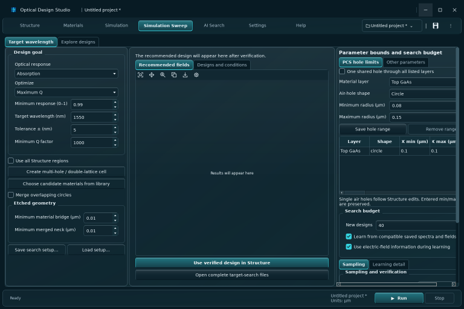
More detail: TARGET_DESIGN_GUIDE.md
AI checkpoints and reference fields
Stop requests cancellation. Completed observations are checkpointed in campaign.json during the run; inspect the saved status and last completed design before resuming. An interrupted native evaluation is not a completed observation. Resume validates geometry, wavelength, ranges, basis, sampling and collection plan. Changed settings start a new campaign rather than silently pooling incompatible observations. A resumed NEW simulation budget counts new evaluations only.
Fit / check saved data only performs no new S4 solves. Compatible campaigns and standalone field samples can be reused; missing RTA may still require native work. Screening and verification observations remain separate. Models are refit from recorded JSON observations rather than loaded executable model objects.
Match a saved field shape accepts one or more semicolon-separated field directories. Wavelength, grid, depth/contour sampling and features must be compatible. Reference similarity guides screening but does not override strength/coverage constraints; high-accuracy verification checks physical requirements.
Inspect campaign.json, model_validation.json, design_results.csv, design_models.jsonl and each design’s fields/rta records. Full contour masks can use substantial disk space. A fine contour increment does not improve spatial field resolution.
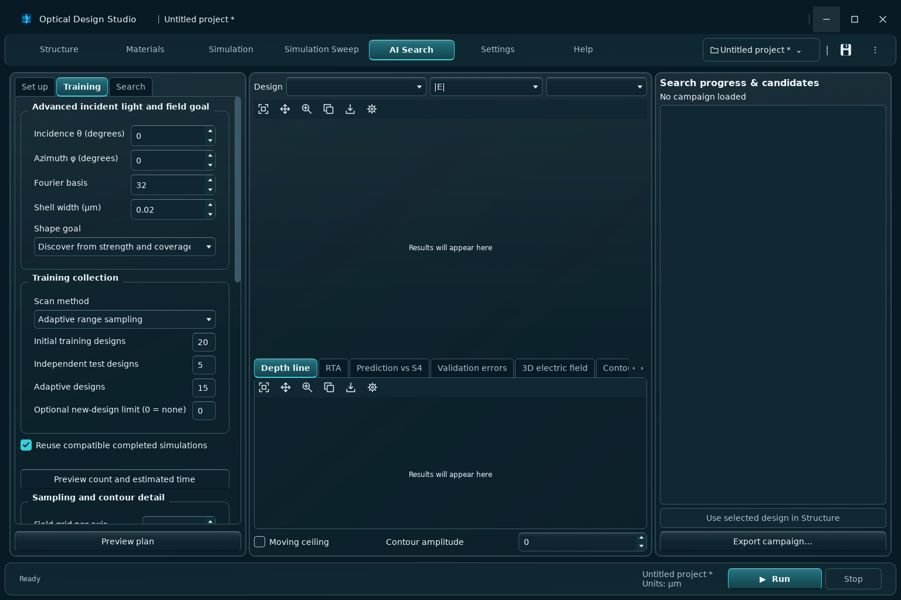
More detail: AI_SEARCH_TRAINING_GUIDE.md
Performance and convergence
Detailed S4 scans stream exact spectrum results and index field samples on disk. Spectrum and fields share the solved state at each wavelength; field planes reuse validated Fourier coefficients. More wavelengths still require more solver work, and field storage grows with wavelength count, grid area and depth count. Increasing the Fourier basis adds a separate, much steeper numerical cost. See DESKTOP_GUIDE.md for detailed scan guidance.
Fourier basis controls RCWA accuracy and cost. Increase basis and refine wavelength/grid sampling until the quantity of interest stabilizes. A narrow high-Q feature needs sufficient spectral samples; a search result is not a convergence study.
Settings → Performance chooses CPU/GPU mode, time limit and offload threshold. Check selected runtime performs an actual GPU calculation when a GPU mode is selected. The default threshold 1024 can leave small calculations on CPU; Use GPU for small matrices sets threshold 1 and can be slower. ML fitting uses CPU. Review saved acceleration counts and fallback warnings.
For FDTD converge resolution, PML, padding and termination time separately; hitting maximum time requires review. For field maps refine Fourier basis as well as grid/depth sampling. Comparing different numerical settings is not a material effect.
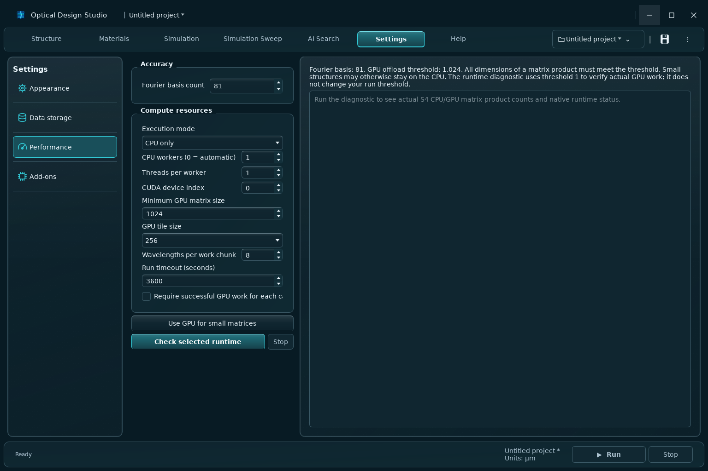
Keyboard shortcuts
| Ctrl+N | New project |
| Ctrl+O | Open project |
| Ctrl+S | Save project |
| Ctrl+Shift+S | Save as |
| Tab / Shift+Tab | Move between controls |
| Alt+F4 | Close window |
Windows title controls minimize, maximize and close. Help search matches topic names and guide text; clear it to restore every topic. Quick actions open the bundled example, the active library/log folder and the real update controls.
About and updates
Help → About displays the actual installation/version. Help → Updates displays update status, check time and the existing download/install controls. Check for updates queries the configured release source. Inspect the offered version and release notes; an available update is not automatically installed.
Download/stage and installation controls follow the application’s update lifecycle. Save work and finish active calculations before restarting into an update. Network or download failure leaves an error rather than a fabricated current-status date. Source and packaged installations can have different update capabilities.
Open library folder in Quick actions locates the active data library. For scientific conventions and extended examples, use the bundled documents linked below.
More detail: UPDATES.md
Run, Stop and progress
The fixed controls at the bottom of the application keep the same position while workspaces change. Run starts the active calculation: S4 · RCWA, MEEP · FDTD, Δn sweep or Fields in Simulation; the selected Target wavelength / Explore designs search in Simulation Sweep; or the search campaign in AI Search.
Choose the workspace and review its inputs before pressing Run. A running calculation disables another Run. Saved results, Structure, Materials, Settings and Help are inspection/editing workspaces; select a calculation workspace to enable Run.
Stop requests cancellation of the active cancellable calculation and waits for its native workers to stop. It is not an immediate process-exit promise or a completed result. Review saved run status and campaign checkpoints before resuming. AI training/fitting/verification retain their dedicated advanced controls. Software updates and add-on installation use the Cancel control inside their own panels.
Silicon example: actual spectrum and fields
These images come from a completed production S4 · RCWA calculation of the bundled example: a 220 nm Silicon layer on semi-infinite SiO₂, with centered circular Air holes of 100 nm radius and a 540 nm square lattice. Air is the incident medium.
The spectrum has 41 calculated samples from 1515 to 1555 nm at 1 nm spacing, p polarization and normal incidence. The recorded run requested Fourier basis 81 and used CPU calculation. Silicon n=3.48, SiO₂ n=1.45 and Air n=1; k=0 for all three. These constant indices are explicit demonstration approximations.
The field maps are calculated at 1550 nm with 25 samples per axis and 3 volume depths in the Silicon layer. Linear |E| is normalized to incident electric-field amplitude. XY is the mid-layer plane at z=0.11 µm; XZ is y=0 through the 0.22 µm film. Plot coordinates are µm; spectrum wavelength is nm. Spectrum graphs use 0–100% of incident power; raw CSV R/T/A remain power fractions.
The bundled validation records finite R/T/A and complex fields, lossless R+T balance, and requested basis 49/81/121 spectrum comparison. This smooth example spectrum does not establish a resonance. Spectral basis checks do not establish spatial field convergence or experimental material accuracy.
Open actual spectrum CSV · Open actual complex field CSV · Open calculation inputs · Open scientific validation · Open portable provenance and file checksums
Open full native spectrum workspace · Open full native Fields workspace


Open the portable index of all 41 wavelength field datasets · Open basis 49 comparison CSV · Open basis 121 comparison CSV
Open high-resolution spectrum export · Open high-resolution field-map export


More detail: provenance.json
Graph controls and saved numeric data
Live 2D charts use native Qt/PyQtGraph items and fill the available panel. Geometry and saved 3D fields use native Qt rendering. Hover over the compact toolbar icons for Fit, Pan, Zoom, Copy, Export and Figure settings. Clicking the RCWA spectrum selects an actual saved sample. Exact spectrum samples remain in indexed storage and complete CSV exports. Large scans use a bounded overview that retains bin extrema; zoom and sample selection retrieve the saved numeric data.
Power is shown as 0–100% on applicable graphs; saved R/T/A values remain dimensionless fractions. A stored value of 0.2 is 20% of incident power. Material sample dots and CSV exports retain the original measurements; the line between them evaluates the chosen interpolation. Plot range controls alter display limits without trimming stored data.
Publication exports retain the Matplotlib physical-size export path. A larger exported image or an interpolated field surface adds no solved information. Inspect units, selected components and normalization before comparing images.
The reference screenshots show native application widgets. Their dark glass color in an offscreen capture is a solid fallback: desktop frosting requires the supported Windows compositor and an actual desktop behind the window.